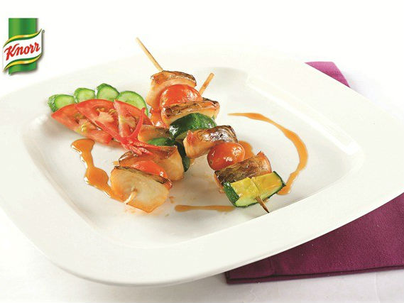

Phi lê cá nướng xiên

- Khẩu phần 4
- Chuẩn bị 20 phút
- Thực hiện 20 phút
Nguyên liệu
- 400g phi lê cá lóc
- 100g cà chua bi
- 100g dưa leo
- 10g tỏi băm
- 10g hành băm
- 2 thìa cà phê đường
- 3 thìa cà phê nước mắm chấm
- 2 thìa cà phê hạt nêm từ Nấm và Rong biển
Hướng dẫn thực hiện
- Phi lê cá lóc cắt miếng vừa ăn. Dưa leo để vỏ, rửa sạch, chẻ đôi, cắt
miếng bằng với miếng cá
- Cho cá, cà chua, dưa leo vào khay, ướp với hành, tỏi, đường nước mắm
chấm , hạt nêm từ Nấm và Rong biển, để khoảng 15 phút cho thấm
- Xiên cá, cà chua, dưa leo vào xiên que, làm lần lượt cho đến hết
- Cho xiên que vào lò nướng hoặc lò than nướng khoảng 15 phút là được.